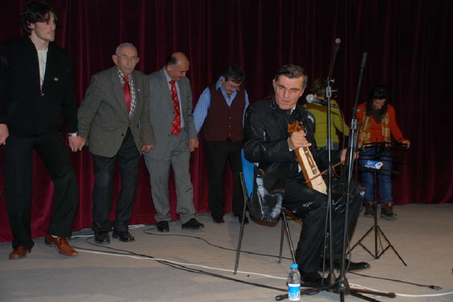
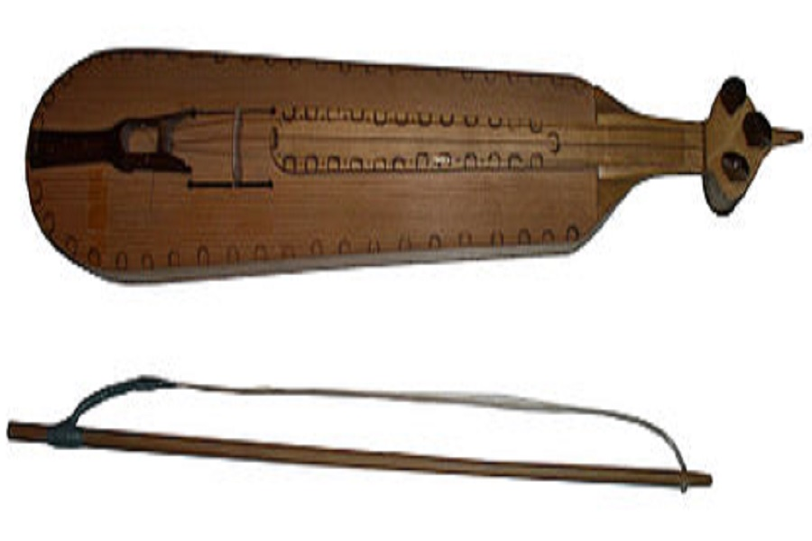

Bar is a form of folk dance of Eastern Turkey. The word bar is from the Armenian word "Պար" (bar) which means dance. With their structure and formation, they are the dances performed by groups in the open. They are spread, in general, all over the region of Eastern Anatolia, especially in Erzurum, Artvin, Bayburt, Ağrı, Kars, and Erzincan provinces. The characteristic of their formation is that they are performed side-by-side, hand, shoulder and arm-in-arm. Woman and man bars are different from one another.
Zeybek Dance
The zeybek is a form of Turkish folk dance originating from Yörüks particular to Western, Central and southern Anatolia in Turkey. It is named after the Zeybeks. All zeybek dances have a common characteristic form, but the positioning of the arms and body differ according to the different regions.

Horon
Horon is generally danced by a chain of either men or women who form a line or semi-circle. The Horon has one of the most characteristic movements which is a fast shoulder shimmy (tremoulo) and a trembling of the entire body and sudden squats, which imitates ... or suggests the movements of a fish called the hamsi (a type of anchovy) as it swims in the sea or struggles in the nets for its life. When men and women link arms and perform together as a couple, the dance is often referred to as Rahat, (comfortable horon) which is slower and simpler in its patterns. Horons are danced to music of the cura zurna, cura davul, tulum, kemence, koltuk davulu, and even the accordion.
Baglama
The bağlama or saz is a family of plucked string instruments, long-necked lutes used in Ottoman classical music, Turkish folk music, Turkish Arabesque music, Azerbaijani music, Kurdish music, Armenian music and in parts of Syria, Iraq and the Balkan countries. According to The New Grove Dictionary of Music and Musicians, "the terms 'bağlama' and 'saz' are used somewhat interchangeably in Turkey." Like the Western lute and the Middle-Eastern oud, it has a deep round back, but a much longer neck.

Kemenche
The kemençe is a bowed bowl-lute chordophone of the western part of Turkey used primarily in the performance of Turkish art music (including the music performed by Mevlevi Sufi musicians to accompany their ayin ceremony [known to Westerners as the 'Whirling Dervishes']) and urban folk music.